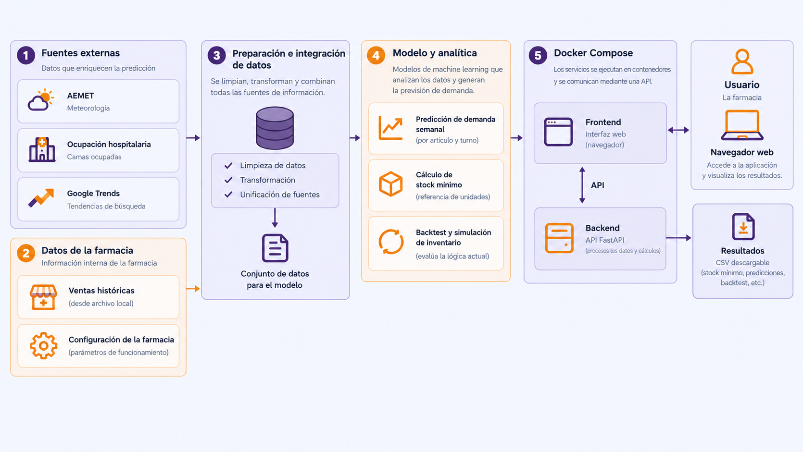

Datos internos
- Histórico de ventas procedente del ERP
- Información de productos y stock
- Calendario y estacionalidad
CASO DE ESTUDIO · DATA SCIENCE
Predicción de demanda y optimización del stock farmacéutico. Un proyecto que integra datos históricos de la farmacia y fuentes externas para anticipar necesidades de reposición y apoyar las decisiones de inventario.
← Volver a proyectosLa gestión del inventario farmacéutico debe equilibrar la disponibilidad de productos con el coste de mantener existencias. Las roturas de stock pueden traducirse en ventas perdidas y falta de disponibilidad, mientras que el exceso de inventario puede inmovilizar capital y aumentar el riesgo de caducidad. Optipharma plantea una solución predictiva para pasar de una gestión reactiva a una planificación basada en datos.
El proyecto combina información interna de la farmacia con señales externas que pueden aportar contexto sobre la evolución de la demanda.
La presentación del proyecto recoge un histórico de 1,1 millones de registros y la integración de variables para enriquecer la predicción.
Limpieza, transformación y unificación de las fuentes. El proceso contempla la creación de variables derivadas, como retardos, medias móviles y medidas de variabilidad.
Se utiliza XGBoost para estimar la demanda. El planteamiento incorpora una función de pérdida asimétrica para dar mayor importancia al coste de determinados errores de predicción.
La documentación del proyecto describe un reentrenamiento mensual mediante una ventana deslizante de 15 meses.
La evaluación combina métricas de error con variables de negocio y analiza el comportamiento del stock y el impacto económico de las predicciones.
La arquitectura organiza la entrada y preparación de datos, el motor analítico y una aplicación con frontend web y backend mediante API. Los resultados contemplan la predicción de demanda, el cálculo de stock mínimo y la generación de información para la reposición.

La salida operativa del proyecto es una estimación de demanda que ayuda a calcular el stock mínimo por artículo y preparar un fichero de reposición. También se contempla el backtesting de la lógica de inventario para analizar su comportamiento.
Estimación de la demanda para apoyar la planificación de existencias.
Conversión de la demanda prevista en una referencia para la reposición de productos.
Simulación del comportamiento de la estrategia de inventario y análisis de sus resultados.
Generación de resultados en CSV para facilitar su consulta y uso operativo.